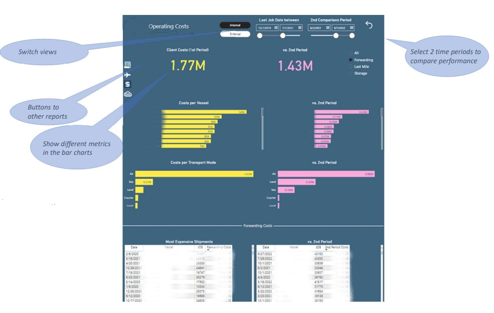
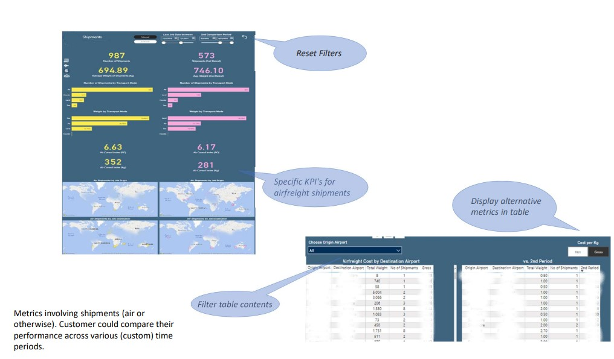
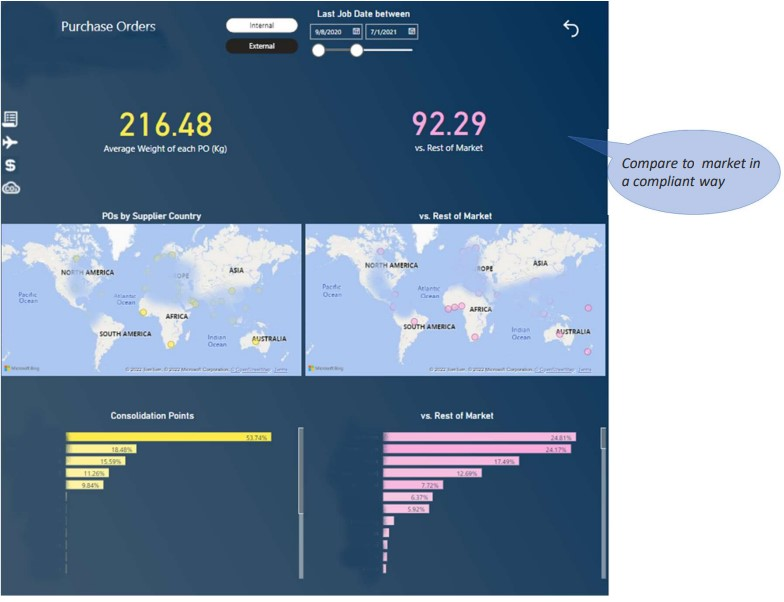

Projects in other industries
Power BI reports for a global Pharmaceutical company
Helped a French Pharmaceutical company manage their global supply chain by eliciting BI requirements, designing reports, and spearheading Power BI & Snowflake model redesign to improve BI app performance.
Power BI reports for a global Shipping Company
This Office Line client required a set of automatic reports to inform their customers in a personalized way. Matt created a set of Power BI reports informing on shipments, orders and costs. By the time Matt left the company, the client was expected to serve their customers information needs even more interactively, enhance security & customer experience, and save on distribution costs at the same time.
|  |  |  |
** The screenshots have been 'sanitized'(parts of the reports with sensitive information have been removed) and aproval for publication has been granted.
Power BI reporting pack and cloud data flows for a leading Greek Energy provider
Developed a Power BI reporting pack to help senior stakeholders manage e-mobility services and and data flows on Azure & Databricks to help the company manage financial risks, together with a global consulting firm.
Marketing Mix Modeling Software for a Marketing Analytics provider
Matt was a member of the team who designed and implemented the software to model weekly sales time series, incorporating pricing, advertising, promotional, seasonal and macroeconomic effects. The company's analysts used the software on a daily basis, to evaluate models from a marketing perspective, interpret the impact on sales of key drivers, and prepare recommendations for customers worldwide.